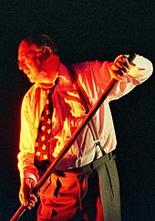

|
|
| Home |
| The company |
| Newsletter |
| Edinburgh Fringe |
| What the press say |
| What you say |
NewsletterNewsletter. August 2016. Dear Friend, Thank you for visiting this website and for looking into this newsletter. I am about to leave for Edinburgh where I will do three shows on The Fringe at Valvona & Crolla. All the times and dates are on our home page. If you are in or around Edinburgh in August I hope you will catch up with us – and if you know anyone who might be interested in any of our work please recommend us to them. It was 40 years ago when I first went to the Fringe with a show about Robert Louis Stevenson which was called ‘Penny Whistles’ – that was the working title for Robert Louis Stevenson’s, ‘A Child’s Garden of Verses’. I liked the unassuming title and used it for our production which included my settings of Stevenson’s little poems. The show was sponsored by Pernod. They didn’t give us any money but they gave as as much Pernod as the audience could drink. The Scotsman reviewer, the late Alistair Clark recommended ther show for a Fringe First. Unfortunately the rules required a second reviewer to second Alistair’s opinion and although it is difficult to imagine anyone disagreeing with Alistair Clark – somebody did! Humph! Alistair’s delightful review finished with the line ‘Absinthe does not make the seat grow softer.’ I was going to pick out some highlights from the last 40 years but there has been an argument among the productions about what is a highlight and who gets left out. I tried to tell them that a long list might be boring and they all ganged up on me so before I dig myself into a deeper hole here is a list of everything I can remember since 1977. If I have left anybody out then I’ll be in big trouble. ‘Penny Whistles of Robert Louis Stevenson’ which included my settings of ‘A Child’s Garden of Verses. ‘Twa Ghaists’ – a journey to the highlands and islands following the shades of Boswell and Johnson. ‘Robert Fergusson – A Lad Insane.’ – about the life and poetry of Burns’s ‘elder brother in the muse.’ ‘A Drunk Man Looks at The Thistle.’ – a youthful attempt to adapt Hugh MacDiarmid’s poem. ‘West Ham v Hearts’ – London and Edinburgh collide in a cabaret of songs and sketches. ‘August 68.’ – a play about the events surrounding a Russian Orchestra’s visit to the Edinburgh Festival in the wake of the Russian invasion of Czechoslovakia. ‘Mike Maran Pie’ – me and my songs. ‘The Jolly Beggars’ – my setting of Burns’s cantata. ‘The Canty Hole’ – the story of Indian Peter with Jack Evans, Derek Hoy and Rod Patterson. (An International Festival production for the Saltire Society) ‘Ring of Bright Water’ – a journey through the writings of Gavin Maxwell with music by Jack Evans and dance by Gabriella Chidgey. ‘An Atom of Delight’ – a journey through the novels of Neil Gunn with music by Derek Hoy and an all star band. ‘Italia ‘n’ Caledonia’ with Philip Contini - songs and stories about the Italians who came to Scotland with music by Simon Thounire and all star band. ‘Caledonia ‘n’ Italia’ with Philip Contini - songs and stories about the Scots who went to Italy with music by Simon Thoumire and all star band. ‘Songs of Travel’ – a journey through the novels of Robert Louis Stevenson with Rod Patterson, Norman Chalmers, Derek Hoy and Rebecca Knorr. ‘Surely You’re Joking, Mr Feynman.’ –with Rick Bamford and Matt Clements - quantum physics and drumming. ‘The Secret of Santa Vittoria’ with Philip Contini - music by Dick Lee and Dave Trouton. ‘Captain Corelli’s Mandolin’ with Philip Contini – music by Alison Stephens and Anne Evans. ‘Did You Used to be R.D.Laing? with music by Dave Milligan. ‘Private Angelo’ with Philip Contini – music by Dick Lee and David Vernon. ‘Mahler: Song & Dance Man’ with music arranged by Karen Wimhurst for string quartet, clarinet and accordion.. ‘The Little World of Don Camillo’ with music by Colin Steele and Martin Green. ‘Garibaldi’ – a fable about a Scottish soldier among the ‘thousand’ with music by David Vernon. ‘Novecento’ with music by Dave Milligan. ‘Picasso & Me’ with music by Karen Wimhurst. ‘Platero and Me’ with music by Castlenuovo Tedesco performed by Craig Ogden. ‘A Christmas Carol’ with music by Alison Stephens. ‘Indian Peter’s Coffee House’ – a reprise of ‘The Canty Hole’ with music by Rona Wilkie and Morag Brown. ‘John Muir: Rhapsody in Green’ with soundscape by Frances M Lynch and Herbie Clarke. ‘A Divine Comedy’ – an adaptation of Dante’s masterpiece. That’s 29 productions over 40 years. (Actually there were 30 productions but I have left one out on the grounds that I do not wish to incriminate myself). I had a few years off after my son Jack was born in 1989 and another few years off to deal with cancer ten years ago but apart from these gaps I have flown north from my home in Cambridge to Edinburgh like a migrating bird every year. I have decided that this year will be the last time and so the last performance in Valvona & Crolla, which will be ‘A Divine Comedy’ on Aug 27th at 12.30pm will be my farewell to the fringe. For many the Edinburgh Fringe is a platform to showcase new work but for me it has always been more like going home – it’s where I was born, where I went to school and university. I have never seen myself as a visitor. Nevertheless, whenever I have come home to Edinburgh in August it has always been with a new piece of work. There is new work – but not for me to perform on stage. I thought I might try and write a novel. I’m 70,000 words into a book and I think I am about one third of the way through it. The shows in the list above are all between 7,000 and 8,000 words except for A Divine Comedy which is a little bit longer so this book is taking me into uncharted waters. I am fascinated by the unusual creatures that inhabit this deeper space and also by the book’s surprising changes of direction as it tacks its way towards its end. I love sitting in my armchair with the lights dimmed and daydreaming the next few pages of the story. I don’t know what I’ll do with it when I’ve finished. I suspect writing books is an even crazier way to try an earn a living that writing and performing plays. There is still much to be done. I would like to go on a world tour with A Divine Comedy. I would like to turn it into a big production with real puppets instead of imaginary ones. I know that Colin Steele would love to do more Funny Valentines and I’m up for that. In fact, I would do any of these shows anywhere if anyone wants them. I am fond of them all. Ciao!
|
|  |